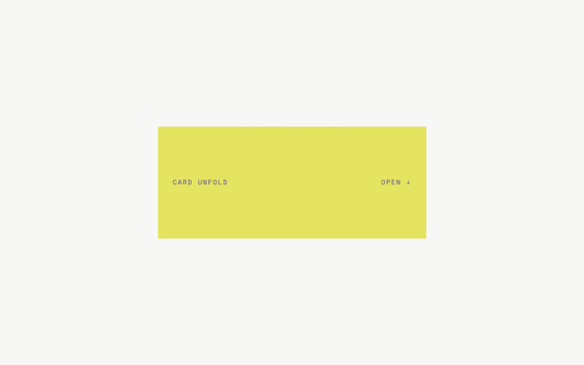
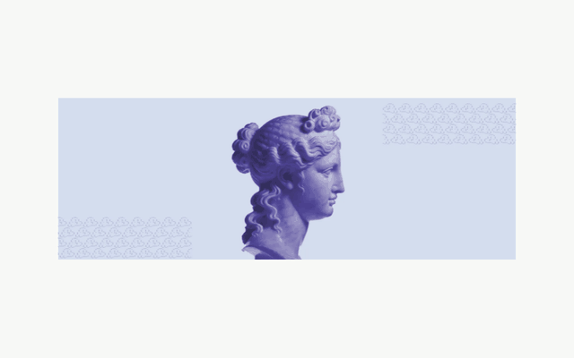
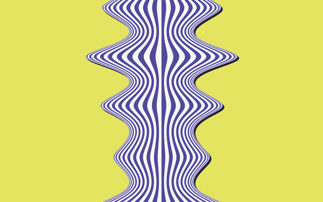
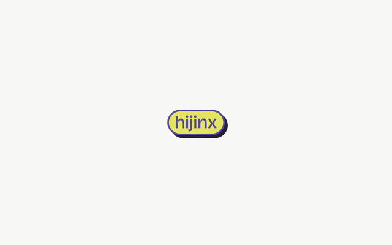
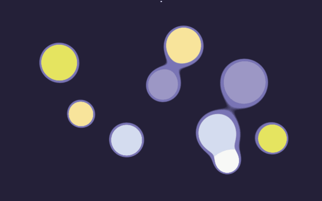
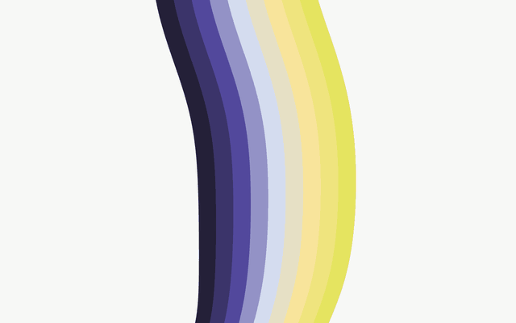
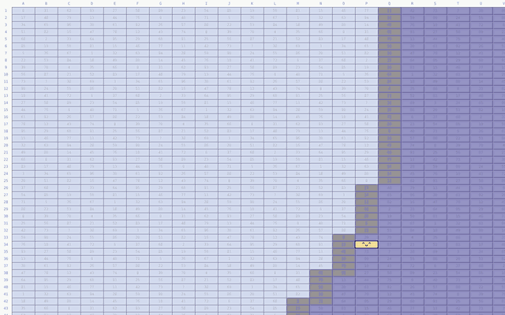
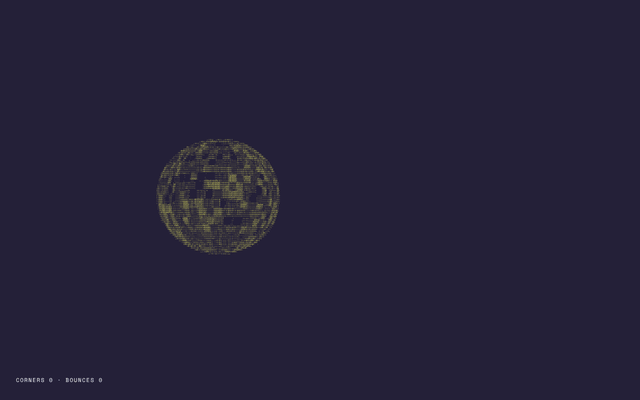
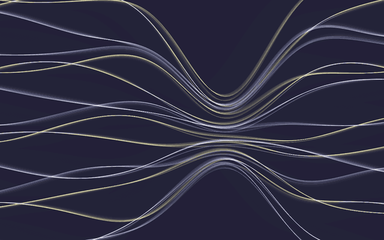

Small motion pieces for websites and digital pages. Some are driven by scroll, some by the pointer, and some by both. Each one is a single HTML file with no libraries, so you can open it, change a few variables and drop it into your own build.

01A card folded in three opens on its hinges as you scroll, then grows until it's the page.
Open the study →
02A wide photo splits into four strips that flip over one by one and land as playing cards.
Open the study →
03Bulges drift down a column of mirrored stripes. Scrolling swells them, then widens the column until the stripes are the page.
Open the study →
04One word, repeated, turns slowly in a lumpy swirl, and the shapes around the words melt together. It just plays, and your pointer pushes the words away.
Open the study →
05Plain circles drift past each other. Scrolling melts them into thick blobs whose colors bleed together. Your pointer is a circle too.
Open the study →
06One ribbon of color glides down the page in slow curves. Scrolling deepens the curves, then turns it over.
Open the study →
07A spreadsheet where nothing moves and only the cell colors change: wipes, tunnels, rings and a word spelled in cells. One cell follows your pointer.
Open the study →
08An icon or a word drifts around the screen, bouncing off the edges and changing color. Swipe across it to knock it off course.
Open the study →
09Three presets in bright lines, like an old music visualizer: beams of light, swirling ribbons and a burst of sparks. Scroll to switch; they gather around your pointer.
Open the study →